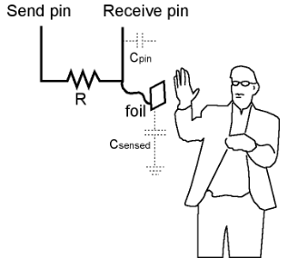
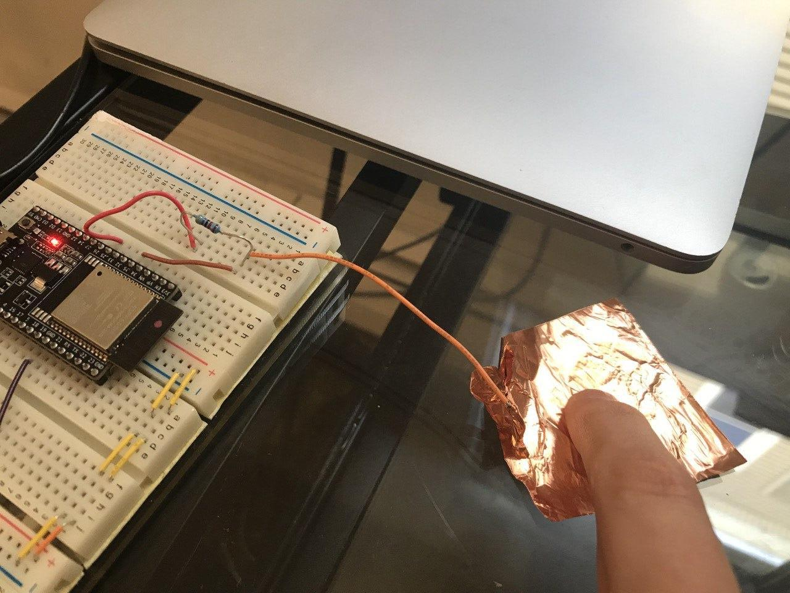

6.810 Engineering Interactive Technologies (fall 2020)
Part 2: Connecting Micro-controller to UI
Your Task for Today
You should hopefully received your package in the mail by now.
Today, we are going to wire up your touch button and connect it to Processing, i.e. when you push the physical touch button it will light up the corresponding digital touch button in Processing.
Your package also includes a printed electroluminescent display so that we can also show you how to communicate from Processing back to the ESP, i.e. when the digital button in Processing is clicked, your physical display will light up.
We will first prototype this with standard breadboard components (normal push button and LED) and then replace those elements with your printed electronics.
Performing input on the Microcontroller
and Displaying it in Processing
First, we are going to read some input from our microcontroller and display the resulting action in Processing.
In particular, we are going to wire up a button, and when the button is pressed, we will show this in Processing by coloring the corresponding button in the digital UI.
Wiring Up a Button
Let's start by wiring up a button.
If you haven't done this in a while, now is a good moment to familiarize yourself again with how to read a schematic and wire on the breadboard.


Create Microcontroller Script that Writes onto Serial Monitor
Next, we need to create the microcontroller script that reads the input from the button.
When the button is pushed, we want to write a message to the Serial port that indicates the push state.
Our seperate Processing application will then listen to the Serial port and whenever it sees a specific value, it will know if the button is pushed or not.
Your task: Write the Arduino script for reading the button input. When the button is pushed, write a 0 to the serial port. If the button is unpushed, write a 1 to the serial port. Test your script by opening the Serial monitor and see if 1 and 0 are written depending on your button input.
More Info on Serial: You may want to look at the Serial reference in Arduino. Remember from 6.08 that you first have to register the Serial connection in the setup function using Serial.begin() and use one of the supported baud rates. You can find the baud rates in the Serial monitor. Since the baud rate determines the bit rate at which data is transmitted, a higher baud rate is better. Once you registered your Serial connection, you can write to it using Serial.write()
Important: Once you confirmed that you button works, make sure you remove all Seriel.println debugging statements you may have used since they will otherwise add noise to the Serial stream the Processing application will listen to.
Create Processing Script that Listens to Serial Communication
Now that we are writing 0 and 1 to the Serial connection depending on whether the button is pressed or not pressed, we can write the Processing script that listens to the Serial connection and changes its visualization depending on the number read.
To do this, open Processing and import the Serial library.
import processing.serial.*;
Next, you need to create a new port by creating an object from this class:
Serial myPort;
To initialize this object, you need a reference to the current application ('this'), a portname, and the baudrate to which the object should listen. You already know the baudrate and you can get the portname with this:
String portName = Serial.list()[2]; //check which port you use: 0, 1, 2? it helps to verify you are listening to the right port with print(portName);
Now you can initialize your Serial connection:
myPort = new Serial(this, portName, 9600);
In the draw function, you need to first check if the port is available, and then you can read the value from the port:
int val;
if ( myPort.available() > 0) { // If data is available,
val = myPort.read(); // read it and store it in val, either 0 or 1
}
Now you can do something based on the value.
Make your button from last week get colored green whenever your physical button is pushed (1), and let it return to silver whenever the button is unpushed (0).
Checkoff 1: Show your working physical button that when pushed causes the Processing application to show the virtual button as pushed as well.
Replacing the Standard Button with your Printed Touch Button
We hope you received your custom touch button from last week. If not, your original package has a standard printed touch button (square) that you can use instead.
We are now going to replace the standard touch button with your custom touch button.
First, use the multimeter to check if you touch button is conductive and didn't break during transport.
If you don't remember how to use the multimeter, check last week's tutorial.

Ok, if your multimeter shows low resistance, we are ready to wire up your touch button.
Electronics: To build the circuit to implement touch sensing you only need your touch sensor and one resistor (say some more why this is necessary). Low resistors (1kOhm - 100kOhm) are mostly used for sensing touch (see Figure below).
 
 
Code: Once you build your circuit, you can write the code to read input from your touch sensor. Capacitive touch sensing is luckily already supported by the Arduino Toolkit.
Download the latest library CapacitiveSensor for Arduino from here and place it into your Documents / Arduino / Libraries folder (unzip it and rename it to 'CapacitiveSensor'). Restart your Arduino software, otherwise the library is not recognized.
First you need to import the library:
#include CapacitiveSensor.h
Next, you need to create a new CapacitiveSensor object:
CapacitiveSensor sensor1 = CapacitiveSensor(sender, touch_pin_1);
It takes as input the pin that has the high signal and the receiver pin.
In the loop function, you are now ready to read from the sensor.
double analog_touch = sensor1.capacitiveSensor(samples_touch);
The argument samples defines the sensitivity of the sensor.
For touch sensing a low sensitivity is common with samples between 1 and 20.
If you print analog_touch to the Serial monitor and you touch your touch button, you should be able to see the values change quite drastically. Do some simple thresholding to determine when the button is pushed and when it is not pushed (e.g., values above XX equal pushed, values below XX equal unpushed).
Checkoff 2: Show your working touch sensor that when pushed, prints 'pushed' to the Serial monitor and otherwise prints 'unpushed'.
Performing Input in Processing
and Using it on the Microcontroller
Let's do it the other way around and write some output from Processing onto the microcontroller.
In our simple example, we will light up an LED when the user clicks a button in the Processing UI, and then later replace it with our printed EL display.
Wiring Up an LED and Write Basic On/Off Code
Let's start by wiring up an LED on the breadboard and writing the basic code to turn the LED on/off.
If you haven't coded in Arduino for a while, you may want to look at 'Examples -> Blink' to see how to read input from a pin and turn your LED on/off.


Create Microcontroller Script that Reads from Serial Monitor
Once you confirmed that your LED works (i.e. you tested it turns on), we will now write a piece of Arduino code that will listen to the Serial communication and whenever it encounters a '2' it will light up the LED and when it encounters a '3' it will turn the LED off.
This part is very similar to the previous Arduino code, just that instead of Serial.write() you are now going to use Serial.read() to determine if a 2 or 3 was send and the LED should be on or off.
Complete the rest of the Arduino script for turning on/off your LED by reading from the Serial connection and upload it to the microcontroller.
We will test this in a moment when we connect it to Processing.
Create Processing Script that Writes to Serial Monitor
Once you uploaded your Arduino code, we are now ready to write a Processing script to write to the serial connection the '2' or '3' values, which can then be used by the Arduino code to decide if the LED should be on or off.
Whenever a button is clicked in the Processing UI, we want to write a '2', otherwise a '3'.
The setup code is the same as in the previous Processing example above, but now you are using
myPort.write(2); // 2 or 3 depending on state
Your task: Complete the Processing script so that when you click on a button, the LED comes on.
Replacing the Standard LED with your Printed Display
With that information in mind, we are now ready to connect your EL display to the microcontroller.
First, use the multimeter to check if your display is conductive and didn't break during transport.
Ok, if your multimeter shows low resistance, we are ready to wire up your EL display.
Electronics: To light up your EL display, you need to build the following circuit (add more information here).
Code: Once you build your circuit, you can write the code to light up your EL display (add more information here).
Connecting EL Display to Processing
Now that you know your EL display is working properly, you can make it light up based on the information coming from the Serial communication. Replace the hard coded on/off for the EL display with the '2' or '3' date you are reading from the Serial monitor.
Bringing it all together
In a final step, extend your code so that whenever your physical touch button is pressed, your EL display lights up. Note this does not require any serial communication, you can simple extend your Arduino script to also account for this, i.e. the EL display can be controlled both with the physical touch button AND with the digital button on screen.
Checkoff 4: Show your working EL display that lights up both when the button in Processing is pushed or when the physical touch button is pushed.
Conclusion
Great, so now we can both read microcontroller input and display it in Processing and also use Processing to control our microcontroller. This will come in handy in the future when we want to build and test more advanced user interfaces.
and Displaying it in Processing
if ( myPort.available() > 0) { // If data is available,
val = myPort.read(); // read it and store it in val, either 0 or 1
}
and Using it on the Microcontroller